Je transforme un RAG restaurant en assistant IA vocal et textuel.
Je pars d'une base Supabase deja construite, je cree un serveur sur, je teste le chatbot texte, je passe a un widget client, j'ajoute la voix, puis je publie une V1 testable pour obtenir un retour concret.
80sections guidees
14captures utilisees
9prompts copiables
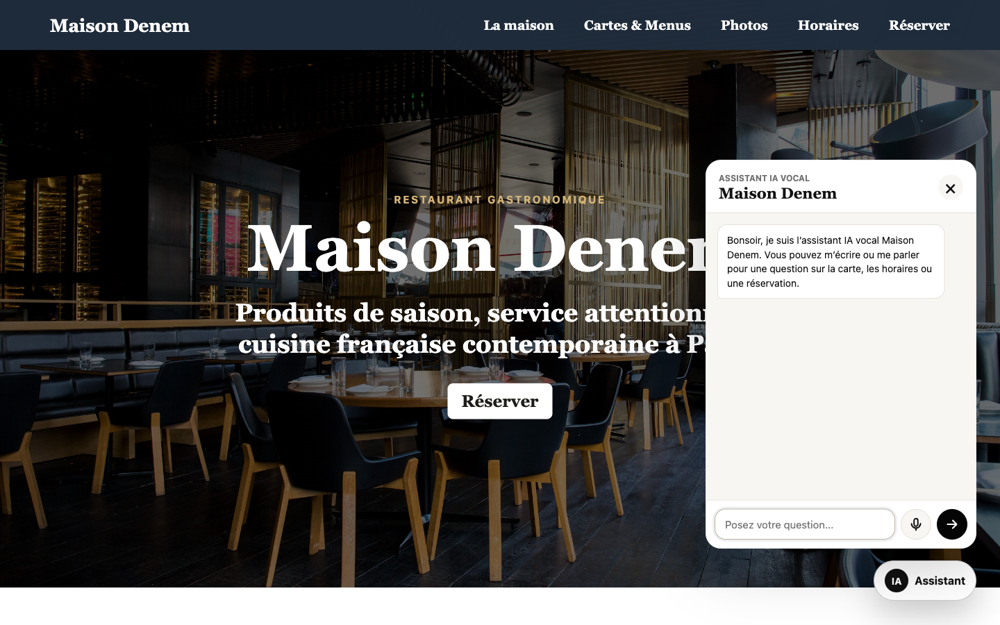
Le resultat vise : un lien client avec un widget IA texte et vocal.
La seance commence avec un avantage enorme : le corpus restaurant existe deja. Je ne repars pas d'une page blanche, je branche une interface sur une base de connaissance deja structuree.
Ouvre le dossier du RAG et garde les fichiers Supabase sous les yeux.
Tu sais quelles tables, quels chunks et quelle RPC servent au chatbot.
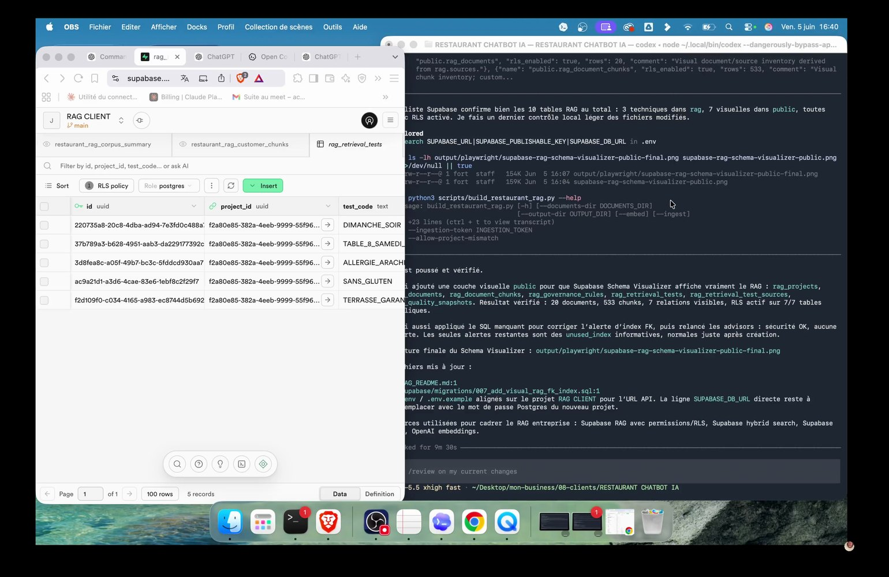
Je repars du RAG restaurant et je lance la suite chatbot.
02
Je ne construis pas un chatbot pour montrer de l'IA. Je construis une reponse utile pour un client qui veut une information.
02Acte 1 · Cadrer la V1Seance 23
Le besoin client est simple.
Le restaurant veut un assistant sur son site pour repondre aux questions clients : carte, horaires, reservation, allergies, groupes et informations pratiques.
A faire
Ramene toujours le projet a une phrase metier.
Preuve
Tu peux expliquer la V1 sans parler d'embeddings.
Attention
Un chatbot qui parle de technique avant de parler client part dans le mauvais sens.
Prompt a copier
Maintenant qu'on a cree le RAG restaurant, cree un chatbot textuel connecte a ce RAG.
Fais d'abord les recherches necessaires sur les bonnes pratiques recentes OpenAI/Supabase.
Architecture attendue :
- serveur Node cote backend
- page HTML/CSS/JS cote client
- aucune cle OpenAI exposee dans le navigateur
- endpoint /api/chat
- endpoint /api/health
- tests curl et Playwright
Le chatbot doit repondre aux questions clients sur :
- carte et menus
- horaires
- reservations
- allergies et regimes
- groupes et privatisations
Garde une V1 simple et testable.
03Acte 1 · Cadrer la V1Seance 23
Je lance la demande initiale.
Je demande a Codex de creer le chatbot texte en s'appuyant sur le RAG. Je demande aussi une recherche de bonnes pratiques recentes, parce que les architectures IA evoluent vite.
A faire
Copie le prompt initial et adapte seulement les variables projet.
Preuve
Codex propose une architecture, cree les fichiers et prepare des tests.
Attention
Sans cadrage, il peut produire une page jolie mais non connectee au RAG.
04Acte 1 · Cadrer la V1Seance 23
Je force la recherche recente.
Je veux que le modele consulte les docs et les pratiques actuelles avant de coder. Sur les sujets IA, une bonne approche en 2025 peut deja etre depassee en 2026.
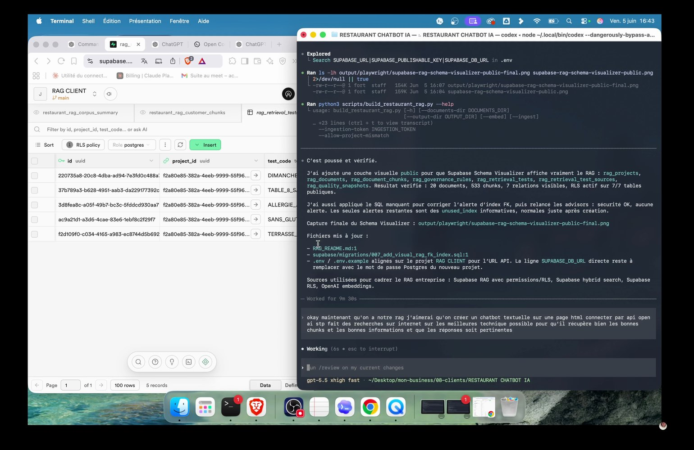
La demande initiale demande recherche recente et architecture simple.
Pourquoi
Je veux que le modele consulte les docs et les pratiques actuelles avant de coder. Sur les sujets IA, une bonne approche en 2025 peut deja etre depassee en 2026.
Action
Ajoute explicitement la recherche web ou docs officielles dans tes demandes techniques.
Preuve
La solution s'appuie sur des endpoints et une logique a jour.
Risque
Ne laisse pas l'IA inventer une architecture parce qu'elle a l'air plausible.
05Acte 1 · Cadrer la V1Seance 23
Je choisis une architecture simple.
Le navigateur ne parle pas directement a OpenAI avec une cle privee. Il appelle un serveur local, puis le serveur cree l'embedding, interroge Supabase et genere la reponse.
Couche
Role
Ce que je verifie
Navigateur
Afficher le widget et envoyer la question
Aucune cle privee dans le front
Serveur Node
Creer l'embedding, appeler Supabase, generer la reponse
Endpoints /api/chat et /api/health
Supabase
Retourner les chunks customer
RPC match_customer_rag
OpenAI
Embeddings, chat, transcription, TTS
Modeles configures dans .env
A faire
Dessine le flux avant de coder.
Preuve
Tu peux pointer chaque responsabilite : client, serveur, OpenAI, Supabase.
Attention
Mettre la cle OpenAI dans le front est une erreur bloquante.
06Acte 1 · Cadrer la V1Seance 23
La securite passe avant le style.
La premiere bonne decision n'est pas visuelle : la cle OpenAI reste dans `.env`, cote serveur. Le client final ne voit jamais les secrets.
1
ActionCree un `.env.example` sans valeur sensible.
2
ValidationLe healthcheck dit si OpenAI et Supabase sont configures sans afficher les cles.
3
PiegeUn repo public avec une cle privee est un incident, pas un detail.
Controle
Le healthcheck dit si OpenAI et Supabase sont configures sans afficher les cles.
07Acte 1 · Cadrer la V1Seance 23
Je cree un dossier projet propre.
Le projet local devient lisible : `server.mjs`, `public/`, `scripts/`, `supabase/`, `rag_output/` et le README RAG. Cette structure permet de reprendre le travail sans fouiller.
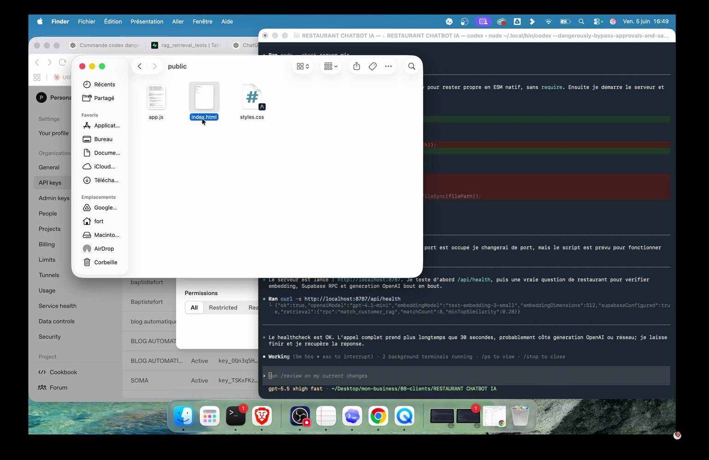
Le projet local commence a prendre forme.
Pourquoi
Le projet local devient lisible : `server.mjs`, `public/`, `scripts/`, `supabase/`, `rag_output/` et le README RAG. Cette structure permet de reprendre le travail sans fouiller.
Action
Range les fichiers par role, pas par ordre de creation.
Preuve
Tu retrouves rapidement le serveur, le front, les migrations et les rapports.
Risque
Un dossier plat devient vite impossible a maintenir.
08Acte 1 · Cadrer la V1Seance 23
Je garde le test local comme base.
Le premier objectif est d'ouvrir `http://localhost:8787`, pas de deployer tout de suite. Le local permet de tester vite, casser, corriger et recommencer.
Pourquoi
Le premier objectif est d'ouvrir `http://localhost:8787`, pas de deployer tout de suite. Le local permet de tester vite, casser, corriger et recommencer.
Action
Lance `npm start`, puis verifie `/api/health`.
Preuve
Le serveur repond avant que tu travailles le design.
Risque
Publier avant d'avoir un local stable multiplie les allers-retours.
09Acte 1 · Cadrer la V1Seance 23
Le premier HTML peut etre laid.
Au debut, je ne cherche pas la page parfaite. Je veux une preuve fonctionnelle : un champ, une question, une reponse et une connexion au RAG.
Avant
Confondre prototype et design final ralentit tout.
Apres
Une vraie question renvoie une vraie reponse issue du corpus.
Decision
Accepte une version moche si elle prouve le flux.
10Acte 1 · Cadrer la V1Seance 23
La V1 commence par une preuve.
La preuve minimale tient en trois points : endpoint sain, question envoyee, reponse retournee. Ensuite seulement je corrige le ton, l'UX et le design.
A faire
Note les preuves de fonctionnement avant les ameliorations.
Preuve
Tu sais si le probleme vient du serveur, du RAG, du prompt ou de l'interface.
Attention
Sans preuve, tu corriges au hasard.
1
ActionNote les preuves de fonctionnement avant les ameliorations.
2
ValidationTu sais si le probleme vient du serveur, du RAG, du prompt ou de l'interface.
3
PiegeSans preuve, tu corriges au hasard.
11
11Acte 2 · Brancher le RAGDebut de bloc
La RPC publique protege le corpus.
`match_customer_rag` retourne uniquement les chunks destines aux clients. Je ne veux pas exposer les donnees internes, les notes equipe ou les contenus techniques.
Utilise une couche publique pour le chatbot client.
Les sources visibles restent dans le perimetre `customer`.
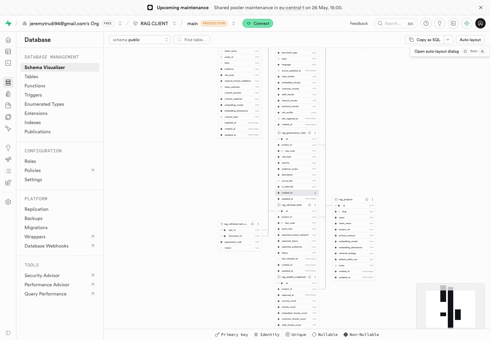
Le Schema Visualizer confirme la couche RAG publique.
12Acte 2 · Brancher le RAGSeance 23
L'embedding doit rester coherent.
La requete utilisateur est transformee avec le meme modele et les memes dimensions que le corpus : `text-embedding-3-small`, 512 dimensions.
A faire
Verifie le modele et la dimension dans le README.
Preuve
Une requete trouve des chunks comparables au corpus.
Attention
Changer de dimension casse la recherche vectorielle.
Commande a tester
curl -s http://localhost:8787/api/health
13Acte 2 · Brancher le RAGSeance 23
Le healthcheck evite les devinettes.
`/api/health` permet de voir si OpenAI, Supabase, l'embedding et la voix sont configures. Je veux une erreur claire, pas un serveur qui bloque.
A faire
Ajoute un endpoint de diagnostic non sensible.
Preuve
Tu vois `ok: true` ou tu sais quoi corriger.
Attention
Ne renvoie jamais les valeurs des cles dans ce diagnostic.
14Acte 2 · Brancher le RAGSeance 23
Je teste avec une question courte.
Je commence par une question simple : horaires du dimanche soir. Elle permet de verifier retrieval, generation et ton client en une seule requete.
Pourquoi
Je commence par une question simple : horaires du dimanche soir. Elle permet de verifier retrieval, generation et ton client en une seule requete.
Action
Teste une question dont tu connais la reponse attendue.
Preuve
Le chatbot repond que le dimanche soir est ferme.
Risque
Une question trop large rend le diagnostic flou.
15Acte 2 · Brancher le RAGSeance 23
Le debug sert a moi, pas au client.
Pendant les tests, je peux afficher les chunks, scores et sources. Mais ce panneau doit disparaitre de l'experience finale.
A faire
Active le debug uniquement en environnement de test.
Preuve
Tu vois pourquoi un chunk est remonte.
Attention
Le client final n'a pas besoin de scores de similarite.
Commande a tester
curl -s -m 90 -X POST http://localhost:8787/api/chat \
-H 'Content-Type: application/json' \
--data '{"message":"Quels sont vos horaires dimanche soir ?","history":[]}'
16Acte 2 · Brancher le RAGSeance 23
Je valide avec `curl`.
Les tests terminal sont rapides et francs. Si `curl` marche mais le navigateur non, le probleme est cote front. Si `curl` echoue, je reste cote serveur ou RAG.
A faire
Garde 3 requetes de test dans ton support.
Preuve
Tu peux reproduire un bug sans cliquer dans l'interface.
Attention
Tester seulement au navigateur cache souvent les erreurs serveur.
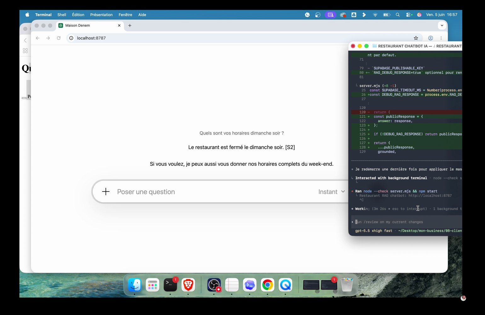
Les premiers tests passent par curl pour isoler le serveur.
17Acte 2 · Brancher le RAGSeance 23
Les allergies demandent de la prudence.
Le chatbot peut informer, mais il ne doit jamais garantir une absence d'allergene ou confirmer une commande sensible sans validation humaine.
Sujet sensible
Reponse autorisee
Limite
Allergie
Informer avec les champs explicites
Jamais garantir sans equipe
Reservation
Collecter date, heure, personnes, contact
Jamais confirmer definitivement
Disponibilite
Dire ce que le contexte permet
Escalader si doute
A faire
Ecris une regle stricte pour allergies et regimes.
Preuve
La reponse conseille de signaler l'allergie a l'equipe.
Attention
Un assistant trop confiant sur les allergies est dangereux.
Prompt a copier
Tu es l'assistant textuel du restaurant Maison Denem.
Objectif :
- Repondre en francais naturel, utile, concis et professionnel.
- Utiliser uniquement les extraits fournis dans CONTEXTE_RAG.
- Ne jamais afficher les references internes [S1], [S2] ou les noms de fichiers.
- Repondre comme une personne qui travaille a l'accueil du restaurant.
Regles strictes :
- Si l'information est presente, reponds directement.
- Si le contexte ne permet pas de repondre avec certitude, dis-le clairement.
- Ne confirme jamais une reservation reelle, une disponibilite definitive ou une allergie garantie sans validation humaine.
- Ne mentionne pas tables SQL, embeddings, chunks ou mecanismes internes.
- Evite : "d'apres les informations disponibles", "selon les informations", "il semble", "dans notre base".
18Acte 2 · Brancher le RAGSeance 23
Le prompt de grounding donne le ton.
Je demande une reponse francaise, naturelle, courte, avec un ton accueil restaurant. Je bannis les formules qui font robot : 'selon les informations disponibles', 'dans la base', 'il semble'.
A faire
Place les regles de ton dans le serveur, pas seulement dans le front.
Preuve
La reponse ressemble a une personne de l'accueil.
Attention
Si le ton reste technique, le client perd confiance.
19Acte 2 · Brancher le RAGSeance 23
Je corrige les phrases faibles.
Quand le chatbot dit 'd'apres les informations disponibles', je le corrige. Il doit parler comme Maison Denem, pas comme un moteur de recherche.
Avant
Un bon retrieval peut etre ruine par une mauvaise formulation.
Apres
Les reponses deviennent directes quand le contexte est clair.
Decision
Liste les formulations interdites.
20Acte 2 · Brancher le RAGSeance 23
La checklist texte est simple.
Avant d'ajouter la voix, le texte doit etre fiable. Je veux horaires, carte, allergies, reservation, groupes et fallback propre.
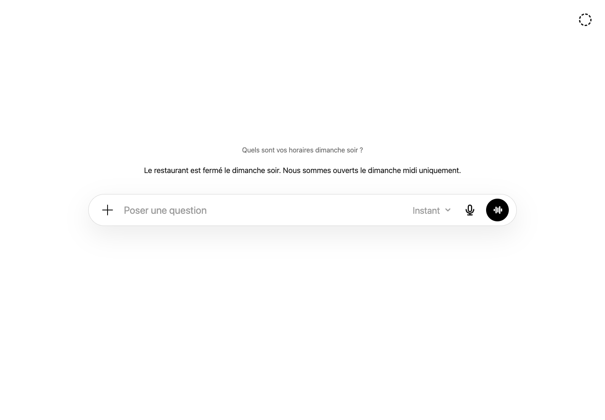
Le prototype minimal valide la reponse client sans debug visible.
Pourquoi
Avant d'ajouter la voix, le texte doit etre fiable. Je veux horaires, carte, allergies, reservation, groupes et fallback propre.
Action
Coche les cas sensibles avant de passer a l'etape suivante.
Preuve
Le chatbot sait repondre, demander une precision ou escalader.
Risque
Ajouter la voix sur une base fragile amplifie les bugs.
21
Je pilote Codex. Quand la direction n'est pas bonne, je coupe et je recadre.
21Acte 3 · Tester le texteSeance 23
Je prototype vite, puis je coupe.
Quand une demande part mal ou que Codex travaille sur une direction inutile, je coupe et je recadre. C'est normal : je pilote l'agent.
A faire
Interromps quand tu vois une mauvaise direction claire.
Preuve
La suite repart sur une consigne plus precise.
Attention
Laisser tourner longtemps une mauvaise branche coute plus cher que recadrer.
22Acte 3 · Tester le texteSeance 23
Je separe technique et experience.
Un prototype technique peut afficher tout : sources, scores, JSON. Une experience client doit garder uniquement ce qui aide a parler au restaurant.
A faire
Decide ce qui est visible selon l'utilisateur.
Preuve
Le client ne voit que la conversation.
Attention
Un panneau technique donne une impression de demo interne.
Prompt a copier
Le design de test n'est pas assez propre.
Je veux une interface tres simple, proche d'une experience ChatGPT/OpenAI :
- page claire
- champ de saisie lisible
- reponses propres
- aucun panneau technique visible pour le client
- responsive desktop/mobile
- design sobre et premium
Garde le debug uniquement pour les tests, pas pour l'utilisateur final.
23Acte 3 · Tester le texteSeance 23
Je demande un design plus proche d'une vraie app.
Je veux une experience simple, claire, proche d'un assistant moderne : champ lisible, reponses propres, aucune surcharge.
A faire
Utilise le prompt de redesign quand la premiere interface est trop brute.
Preuve
La page devient utilisable sans explication.
Attention
Ne te bats pas avec le CSS avant d'avoir formule l'intention UX.
24Acte 3 · Tester le texteSeance 23
Je supprime les metriques du client.
Les sources et les scores sont utiles pour moi, mais ils ne doivent pas parasiter l'utilisateur final. Je garde le debug dans le serveur ou en mode optionnel.
Pourquoi
Les sources et les scores sont utiles pour moi, mais ils ne doivent pas parasiter l'utilisateur final. Je garde le debug dans le serveur ou en mode optionnel.
Action
Cache le retrieval dans la version publique.
Preuve
La reponse client reste courte et nette.
Risque
Un utilisateur final ne vient pas verifier tes chunks.
25Acte 3 · Tester le texteSeance 23
Je raisonne comme le client.
L'utilisateur qui pose une question sur un menu veut savoir quoi manger, pas comprendre comment le RAG selectionne un document.
A faire
Relis chaque ecran avec cette question : 'est-ce que ca aide le client ?'
Preuve
L'interface donne une reponse ou une prochaine action.
Attention
Le design technique fait plaisir au createur, rarement au client.
26Acte 3 · Tester le texteSeance 23
Playwright devient mon controle reel.
Je verifie la page dans un navigateur, pas seulement avec `node --check`. Le rendu, les clics et les messages doivent fonctionner.
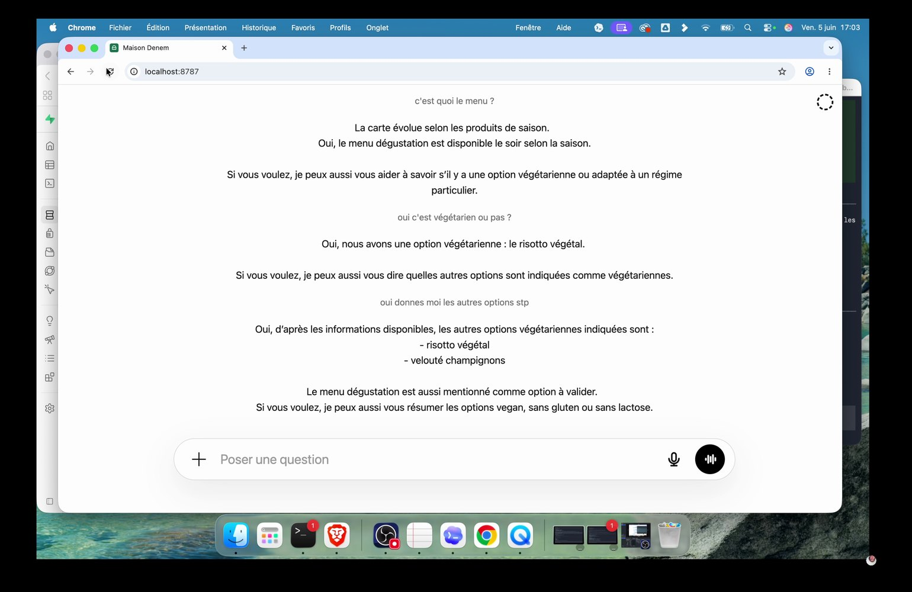
Playwright controle le rendu reel dans le navigateur.
Pourquoi
Je verifie la page dans un navigateur, pas seulement avec `node --check`. Le rendu, les clics et les messages doivent fonctionner.
Action
Ouvre le local avec Playwright et teste une vraie question.
Preuve
Le snapshot montre le champ, le titre et les messages.
Risque
Un code valide peut produire une interface inutilisable.
27Acte 3 · Tester le texteSeance 23
Je nettoie les erreurs visibles.
Un favicon manquant ou une erreur console n'empeche pas toujours la demo, mais ca signale une finition faible. Je corrige avant de continuer.
1
Preparer
Regarde la console au premier chargement.
2
Verifier
La page charge sans erreur inutile.
3
Corriger
Les petits signaux visuels comptent dans une livraison client.
28Acte 3 · Tester le texteSeance 23
Je garde une capture de preuve.
Quand un test fonctionne, je prends une capture. Elle servira au support, au client et a ma propre memoire de projet.
Pourquoi
Quand un test fonctionne, je prends une capture. Elle servira au support, au client et a ma propre memoire de projet.
Action
Archive une capture apres chaque jalon important.
Preuve
Tu peux montrer la progression sans rouvrir tout l'environnement.
Risque
Sans trace, tu oublies pourquoi une decision a ete prise.
29Acte 3 · Tester le texteSeance 23
Le prototype minimal valide la logique.
La page simple confirme que le client peut poser une question et obtenir une reponse. Ce n'est pas encore beau, mais la chaine fonctionne.
Avant
Ne t'attache pas au premier design.
Apres
Une question client renvoie une reponse sans panneau technique.
Decision
Utilise le prototype comme jalon, pas comme livraison.
30Acte 3 · Tester le texteSeance 23
Je diagnostique avant d'embellir.
Quand la reponse ou l'affichage ne convient pas, je distingue trois sujets : retrieval, prompt, interface. Le bon correctif depend de cette separation.
A faire
Nomme la couche en faute avant de modifier.
Preuve
Tu sais quoi demander a Codex.
Attention
Corriger le CSS ne reparera jamais un retrieval faible.
1
ActionNomme la couche en faute avant de modifier.
2
ValidationTu sais quoi demander a Codex.
3
PiegeCorriger le CSS ne reparera jamais un retrieval faible.
31
31Acte 4 · Passer au design clientDebut de bloc
Je bascule vers un site restaurant.
A ce stade, l'assistant doit vivre dans une page qui ressemble au client. Je cree donc une vitrine Maison Denem avec hero, navigation, menu, horaires et reservation.
Place le widget dans son contexte final.
Le chatbot ressemble a une fonctionnalite du site.
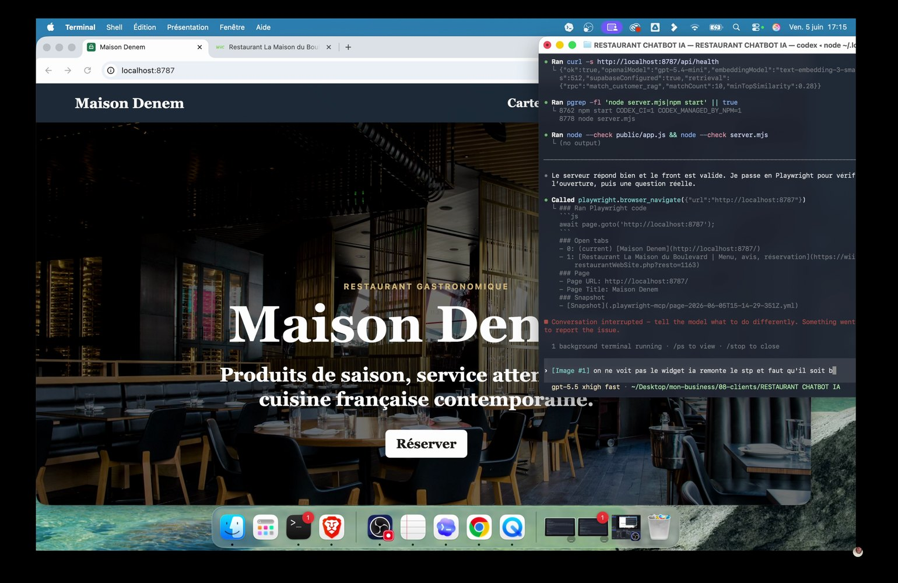
Je bascule vers un vrai site restaurant.
32Acte 4 · Passer au design clientSeance 23
La marque doit etre visible tout de suite.
Le premier ecran dit clairement Maison Denem. L'assistant n'est pas un outil generique, il represente le restaurant.
A faire
Fais apparaitre le nom du restaurant dans le hero et le widget.
Preuve
Le client reconnait son univers en arrivant.
Attention
Un widget blanc generique peut sembler deconnecte.
Prompt a copier
N'oublie pas que c'est pour un client.
L'utilisateur final se fiche de voir :
- les sources
- les scores
- les metriques
- les chunks
Rapproche-toi d'un design client propre :
- site restaurant Maison Denem
- hero premium
- navigation simple
- widget assistant en bas a droite
- reponse client uniquement
- ton naturel et chaleureux.
33Acte 4 · Passer au design clientSeance 23
Je demande une experience client, pas une demo.
Je recadre Codex : le restaurant se fiche des sources et des scores, il veut une reponse naturelle et un design propre.
A faire
Utilise ce prompt quand le rendu ressemble encore a un back-office.
Preuve
Le widget devient une experience visible et presentable.
Attention
Un outil interne ne se transforme pas tout seul en produit client.
34Acte 4 · Passer au design clientSeance 23
Le site a besoin de reperes simples.
La navigation reste classique : la maison, cartes et menus, photos, horaires, reserver. Le widget s'ajoute sans voler toute l'attention.
Pourquoi
La navigation reste classique : la maison, cartes et menus, photos, horaires, reserver. Le widget s'ajoute sans voler toute l'attention.
Action
Garde une structure de site que tout le monde comprend.
Preuve
L'utilisateur trouve le bouton reservation et l'assistant.
Risque
Un site trop experimental distrait du test de l'assistant.
35Acte 4 · Passer au design clientSeance 23
Le widget vit dans le parcours.
Je veux un bouton d'assistant en bas, un panneau propre et une zone de saisie claire. Le client doit pouvoir cliquer, poser sa question et fermer sans reflechir.
A faire
Teste l'ouverture, la fermeture et le focus du champ.
Preuve
Le widget s'ouvre et se ferme correctement.
Attention
Un bouton trop bas ou coupe donne une impression cassee.
36Acte 4 · Passer au design clientSeance 23
Le bouton doit etre comprehensible.
Le launcher indique IA + Assistant. C'est court, visible et suffisant. Je n'ajoute pas de phrase explicative dans l'interface.
1
ActionUtilise un libelle court sur le bouton.
2
ValidationL'utilisateur comprend ou cliquer.
3
PiegeTrop de texte sur le bouton alourdit l'ecran.
Controle
L'utilisateur comprend ou cliquer.
37Acte 4 · Passer au design clientSeance 23
Le panneau commence par une phrase utile.
Le premier message dit ce que l'assistant peut faire : carte, horaires, reservation. Ce n'est pas un discours marketing, c'est une orientation pratique.
1
Preparer
Ecris un message d'accueil court.
2
Verifier
L'utilisateur sait quoi demander.
3
Corriger
Un message trop long repousse la premiere question.
38Acte 4 · Passer au design clientSeance 23
Je corrige la position du widget.
Le bouton et le panneau ne doivent pas sortir de l'ecran. Je reajuste les offsets desktop et mobile pour qu'ils restent visibles.
Pourquoi
Le bouton et le panneau ne doivent pas sortir de l'ecran. Je reajuste les offsets desktop et mobile pour qu'ils restent visibles.
Action
Verifie bas, droite et hauteur du widget.
Preuve
Le champ reste accessible sur desktop et mobile.
Risque
Un widget coupe rend le test client inutilisable.
39Acte 4 · Passer au design clientSeance 23
Le mobile est obligatoire.
Un restaurant sera teste depuis un telephone. Je dois donc verifier la taille du panneau, les textes, les boutons et la saisie mobile.
Avant
Un desktop propre ne garantit rien sur mobile.
Apres
Le texte ne deborde pas et le bouton micro reste visible.
Decision
Controle un viewport mobile avant de publier.
40
Un widget premium doit aider sans voler toute la page.
40Acte 4 · Passer au design clientSeance 23
L'UX finale reste sobre.
Je ne veux pas une interface spectaculaire. Je veux un restaurant premium, calme, lisible, avec un assistant qui aide sans dominer.
A faire
Retire les effets inutiles.
Preuve
Le site respire et le widget reste discret.
Attention
Un design trop charge casse le positionnement restaurant.
41
41Acte 5 · Construire le widgetDebut de bloc
La voix vient apres le texte.
Je n'ajoute la voix qu'une fois le texte assez fiable. La voix reutilise le meme RAG : elle ne doit pas creer une deuxieme logique.
Stabilise `/api/chat` avant `/api/voice`.
Texte et voix donnent des reponses coherentes.
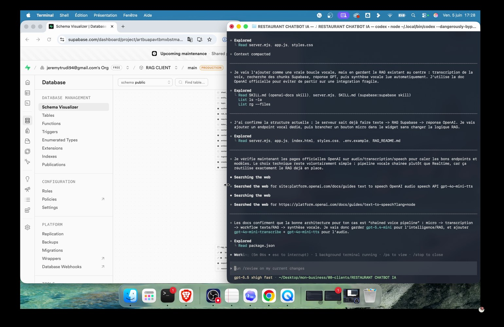
Je recherche la meilleure approche pour ajouter la voix.
Prompt a copier
J'aimerais rajouter une partie vocale pour les demandes clients.
Le client doit pouvoir parler au widget et recevoir une reponse vocale.
Fais des recherches sur les docs OpenAI actuelles, puis propose l'architecture la plus simple et la plus sure en reutilisant notre RAG existant.
Je veux garder :
- la logique RAG cote serveur
- les cles privees cote serveur
- une experience simple pour le client
- des tests texte et vocal avant publication.
42Acte 5 · Construire le widgetSeance 23
Je demande l'architecture vocale la plus sure.
Je pourrais partir sur du realtime pur, mais ici je choisis un pipeline plus simple : enregistrer, transcrire, interroger le RAG, generer une reponse audio.
A faire
Copie le prompt voix puis demande une decision d'architecture.
Preuve
Codex justifie le choix et reutilise le serveur existant.
Attention
Le realtime pur peut etre trop lourd pour une V1 client.
43Acte 5 · Construire le widgetSeance 23
Le pipeline vocal est facile a expliquer.
Micro navigateur, transcription OpenAI, retrieval Supabase, reponse texte, TTS OpenAI, lecture dans le widget. Chaque etape a un role clair.
Etape
Entree
Sortie
1. Micro
Audio navigateur
Blob court
2. Transcription
Audio encode
Texte utilisateur
3. RAG
Transcript
Chunks customer
4. Generation
Contexte + question
Reponse client
5. TTS
Reponse nettoyee
Audio lu dans le widget
A faire
Explique le flux en une ligne avant de coder.
Preuve
Tu peux debugger chaque etape separement.
Attention
Un pipeline flou devient impossible a maintenir.
44Acte 5 · Construire le widgetSeance 23
`/api/voice` garde le backend au centre.
Le front envoie un audio encode, le serveur transcrit et renvoie transcript, reponse et audio. Le navigateur ne voit toujours pas les cles.
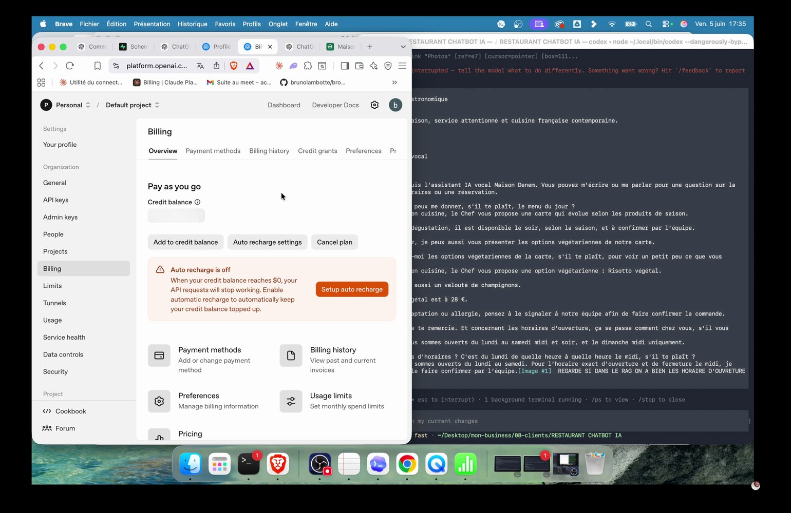
Le pipeline vocal reste cote serveur et reutilise le RAG.
Pourquoi
Le front envoie un audio encode, le serveur transcrit et renvoie transcript, reponse et audio. Le navigateur ne voit toujours pas les cles.
Action
Ajoute l'endpoint vocal cote serveur.
Preuve
Une requete vocale renvoie `transcript`, `answer` et `audio`.
Risque
Ne fais pas transcrire directement avec une cle front.
45Acte 5 · Construire le widgetSeance 23
Le navigateur enregistre court.
Le widget utilise `MediaRecorder`, coupe a 30 secondes et gere les formats supportes. C'est suffisant pour une demande client.
A faire
Limite la duree d'enregistrement.
Preuve
Le bouton micro change d'etat pendant l'enregistrement.
Attention
Sans limite, un audio trop long peut casser la requete.
46Acte 5 · Construire le widgetSeance 23
La transcription devient une question normale.
Une fois transcrit, le message vocal repasse dans le meme `handleChat`. C'est la bonne economie : pas de prompt vocal separe inutile.
1
ActionReuse le meme chemin RAG pour texte et voix.
2
ValidationLe transcript apparait dans la conversation.
3
PiegeDeux prompts differents compliquent la qualite.
Controle
Le transcript apparait dans la conversation.
47Acte 5 · Construire le widgetSeance 23
La reponse audio suit la reponse texte.
Le TTS lit exactement la reponse client, apres nettoyage. Le texte reste visible pour que l'utilisateur puisse relire.
1
Preparer
Affiche le texte meme quand l'audio joue.
2
Verifier
L'utilisateur entend et voit la reponse.
3
Corriger
Un audio seul est frustrant si l'utilisateur manque une phrase.
48Acte 5 · Construire le widgetSeance 23
J'accelere la lecture sans refaire tout le pipeline.
La voix est trop lente. Le correctif pragmatique consiste a augmenter `playbackRate` cote client au lieu de reconstruire tout le systeme.
Pourquoi
La voix est trop lente. Le correctif pragmatique consiste a augmenter `playbackRate` cote client au lieu de reconstruire tout le systeme.
Action
Corrige la vitesse au plus petit endroit pertinent.
Preuve
La voix devient plus naturelle a tester.
Risque
Un gros refactor pour un probleme de vitesse est inutile.
49Acte 5 · Construire le widgetSeance 23
Je prevois les erreurs micro.
Le navigateur peut refuser le micro, l'audio peut etre trop court, la lecture peut etre bloquee. L'interface doit repondre clairement.
Avant
Un silence apres clic micro donne l'impression que tout est casse.
Apres
L'utilisateur sait quoi refaire.
Decision
Ajoute des messages d'erreur humains.
50Acte 5 · Construire le widgetSeance 23
Le premier test vocal porte sur le menu.
Je teste une question naturelle : 'peux-tu me donner le menu du jour ?'. Elle valide micro, transcription, RAG, generation et TTS.
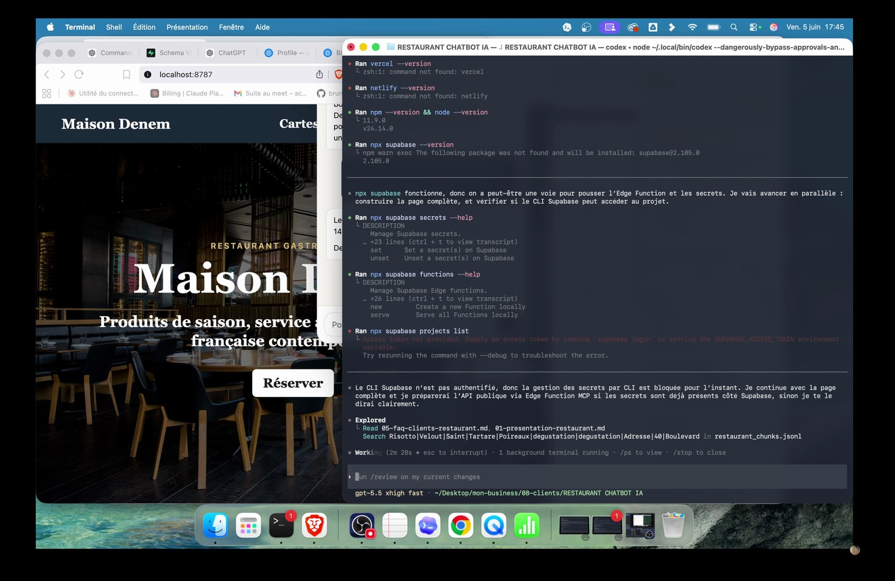
Le widget vocal doit rester utilisable sur mobile.
Pourquoi
Je teste une question naturelle : 'peux-tu me donner le menu du jour ?'. Elle valide micro, transcription, RAG, generation et TTS.
Action
Teste une question courte et concrete.
Preuve
Le chatbot parle du menu degustation et de la carte de saison.
Risque
Une question trop vague ne permet pas de diagnostiquer.
51
51Acte 6 · Ajouter la voixDebut de bloc
Je teste les options vegetariennes.
La reponse doit remonter le risotto vegetal, le veloute et les precautions de validation cuisine. C'est un bon cas pour verifier les regimes.
Teste un regime alimentaire explicitement.
Le chatbot cite une option sans inventer.
52Acte 6 · Ajouter la voixSeance 23
Les horaires revelent une faiblesse.
La voix fonctionne, mais le chatbot ne donne pas l'horaire exact du lundi midi. Je comprends que le probleme vient du retrieval ou de la logique horaires, pas du micro.
A faire
Separe le bug voix du bug connaissance.
Preuve
La couche a corriger est identifiee.
Attention
Accuser la voix quand le RAG est en faute fait perdre du temps.
53Acte 6 · Ajouter la voixSeance 23
Je corrige les horaires comme un cas prioritaire.
Pour un restaurant, les horaires sont critiques. Je demande a Codex de reparer le retrieval et la reponse pour lundi, dimanche, midi et soir.
A faire
Utilise le prompt de correction horaires.
Preuve
Le lundi retourne 12h00-14h30 et 19h00-22h30.
Attention
Un assistant qui rate les horaires perd vite toute credibilite.
Prompt a copier
La voix fonctionne, mais le RAG ne donne pas les horaires exacts.
Corrige le retrieval et/ou la logique de reponse pour que les questions suivantes retournent les horaires precis quand ils existent :
- lundi midi
- lundi soir
- dimanche midi
- dimanche soir
- horaires d'ouverture
Teste en texte et en vocal.
Ne donne pas de formule de doute si le contexte contient l'information exacte.
54Acte 6 · Ajouter la voixSeance 23
Je repare la logique, pas seulement le prompt.
Le serveur ajoute une detection des questions d'horaires et une fonction qui lit les champs horaires dans les chunks. Ce n'est pas juste une consigne de style.
A faire
Ajoute une fonction dediee aux cas deterministes.
Preuve
Les horaires exacts sortent sans formule de doute.
Attention
Tout mettre dans le prompt rend les reponses moins stables.
55Acte 6 · Ajouter la voixSeance 23
Je reteste avec une phrase naturelle.
Je demande les horaires du lundi pour un diner avec ma femme. Le chatbot doit comprendre l'intention meme si la phrase n'est pas technique.
A faire
Teste avec une formulation client.
Preuve
La reponse donne midi et soir.
Attention
Un test trop propre ne reflete pas un vrai usage.
56Acte 6 · Ajouter la voixSeance 23
Je confirme la derniere reservation.
Quand le contexte le permet, l'assistant peut ajouter la derniere reservation du soir. C'est utile, mais seulement si la source le contient.
1
ActionAjoute l'information seulement quand elle est presente.
2
ValidationLa reponse lundi mentionne 21h45 si disponible.
3
PiegeInventer une derniere reservation est pire que ne rien dire.
Controle
La reponse lundi mentionne 21h45 si disponible.
57Acte 6 · Ajouter la voixSeance 23
Je surveille le cout.
Je regarde le pricing et les appels, parce que texte + embeddings + transcription + TTS peuvent s'accumuler. Une V1 doit rester testable sans surprise.
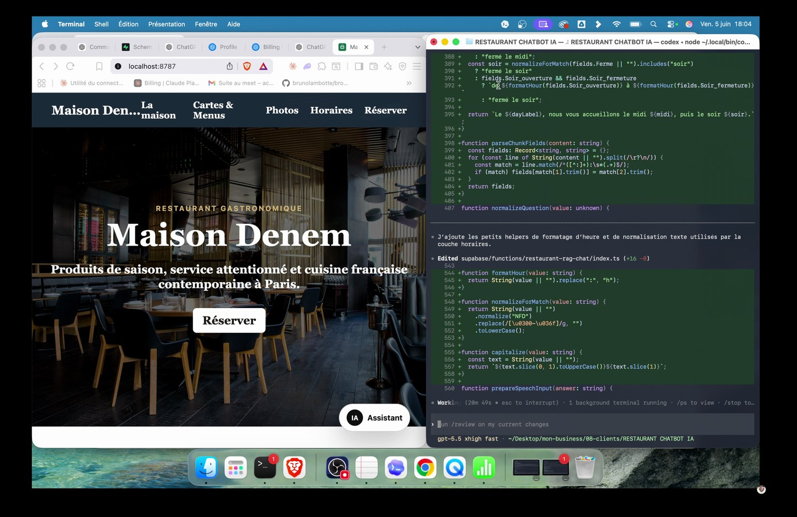
Les tests horaires confirment les corrections.
Pourquoi
Je regarde le pricing et les appels, parce que texte + embeddings + transcription + TTS peuvent s'accumuler. Une V1 doit rester testable sans surprise.
Action
Garde un oeil sur les appels API pendant les tests.
Preuve
Tu sais si la V1 est raisonnable pour une demo.
Risque
Ignorer le cout empeche de vendre proprement.
58Acte 6 · Ajouter la voixSeance 23
La voix est validee par repetition.
Je ne valide pas sur une seule reponse. Je refais texte et vocal apres correction pour verifier que le bug ne revient pas.
Pourquoi
Je ne valide pas sur une seule reponse. Je refais texte et vocal apres correction pour verifier que le bug ne revient pas.
Action
Reteste la meme intention apres chaque fix.
Preuve
La reponse vocale est plus rapide et plus precise.
Risque
Un seul test reussi ne suffit pas.
59Acte 6 · Ajouter la voixSeance 23
Le menu du soir echoue encore.
A 1 h 31, la question 'menu du soir' remonte trop les horaires et pas assez la carte. C'est un bug typique : un mot perturbe le retrieval.
Avant
Corriger seulement la reponse ne repare pas la selection des sources.
Apres
Tu sais pourquoi les chunks horaires remontent.
Decision
Note le mot qui biaise la recherche.
60
La voix ne repare pas un mauvais RAG. Elle le rend juste plus visible.
60Acte 6 · Ajouter la voixSeance 23
L'historique peut biaiser la requete.
Si la conversation parlait d'horaires juste avant, le mot 'soir' peut tirer le retrieval vers les heures au lieu du menu. Je dois controler ce que j'envoie a Supabase.
A faire
Nettoie ou enrichis la requete selon l'intention courante.
Preuve
Menu du soir cherche menu et carte, pas horaires.
Attention
Inclure tout l'historique sans filtre peut deformer l'intention.
61
61Acte 7 · Corriger le retrievalDebut de bloc
Je demande une correction menu structuree.
Je veux que 'menu', 'carte', 'ce qu'on mange' et 'menu du soir' lisent directement les chunks menu. Les horaires ne doivent pas prendre le dessus.
Utilise le prompt correction menu.
Le menu du soir retourne carte, entrees, plats, desserts et degustation.
62Acte 7 · Corriger le retrievalSeance 23
Je cree un catalogue menu deterministe.
Le serveur recupere les chunks menu et allergenes dans une route plus structuree. Pour certaines questions, ce controle vaut mieux qu'une simple similarite.
A faire
Ajoute un chemin dedie aux demandes de carte.
Preuve
Les plats et prix remontent dans l'ordre.
Attention
Un RAG pur peut etre faible sur des listes structurees.
Prompt a copier
Le menu du soir ne remonte pas correctement.
Le retrieval est trop influence par l'historique et par le mot "soir".
Corrige pour que les demandes suivantes lisent les chunks menu structures :
- menu
- carte
- ce qu'on mange
- menu du soir
- options vegetariennes
Objectif :
- retourner la carte complete quand elle existe
- entrees, plats, desserts, menu degustation
- ne pas basculer vers les horaires juste parce que le client dit "soir"
- tester texte et vocal apres correction.
63Acte 7 · Corriger le retrievalSeance 23
Les options vegetariennes viennent de la matrice.
La reponse vegetarienne ne doit pas inventer. Elle lit les champs du fichier allergenes et regimes : vegetarien, vegan possible, sans gluten possible.
A faire
Appuie les regimes sur des champs explicites.
Preuve
Risotto vegetal et veloute remontent proprement.
Attention
Le nom d'un plat ne suffit pas a conclure.
64Acte 7 · Corriger le retrievalSeance 23
Les allergies restent avec validation humaine.
Meme avec une matrice, l'assistant rappelle que l'equipe confirme avant commande. C'est une regle produit, pas une faiblesse.
Pourquoi
Meme avec une matrice, l'assistant rappelle que l'equipe confirme avant commande. C'est une regle produit, pas une faiblesse.
Action
Formule 'a confirmer par l'equipe' quand le risque existe.
Preuve
La reponse est utile sans etre dangereuse.
Risque
La certitude abusive est le pire comportement d'un assistant restaurant.
65Acte 7 · Corriger le retrievalSeance 23
Je nettoie les references internes.
`sanitizeClientAnswer` retire les references `[S1]`, evite les formules faibles et garde une reponse lisible. Le client ne doit pas voir les traces internes.
A faire
Nettoie la sortie avant de l'afficher.
Preuve
Aucun tag source n'apparait dans le widget final.
Attention
Un tag `[S2]` dans une reponse publique casse l'immersion.
66Acte 7 · Corriger le retrievalSeance 23
Je valide les tests finaux.
Les tests retenus sont simples : menu du soir, options vegetariennes, horaires lundi. Ils couvrent carte, regimes et horaires.
1
ActionGarde une mini suite de tests metier.
2
ValidationChaque test donne une reponse coherente.
3
PiegeDes tests trop nombreux sans priorite ralentissent la livraison.
Controle
Chaque test donne une reponse coherente.
67Acte 7 · Corriger le retrievalSeance 23
La fonction publique prend le relais.
Pour GitHub Pages, le widget public appelle une fonction Supabase Edge. Les cles OpenAI restent cote serveur Supabase, pas dans la page statique.
1
Preparer
Utilise une API publique securisee pour la page statique.
2
Verifier
Le site GitHub Pages peut appeler le RAG.
3
Corriger
GitHub Pages seul ne peut pas garder une cle privee.
68Acte 7 · Corriger le retrievalSeance 23
La checklist retrieval ferme la boucle.
Je dois savoir si les bons chunks remontent, si la reponse est directe, si les cas sensibles escaladent et si le client ne voit pas le debug.
Pourquoi
Je dois savoir si les bons chunks remontent, si la reponse est directe, si les cas sensibles escaladent et si le client ne voit pas le debug.
Action
Coche retrieval, prompt, UI et securite.
Preuve
Le systeme est testable par un client.
Risque
Oublier une couche cree une V1 fragile.
69Acte 7 · Corriger le retrievalSeance 23
Je cree un repo public dedie.
Le depot formation principal est prive et trop large. Pour tester la V1 client, je pousse seulement le site public dans un repo dedie.
Avant
Rendre public un repo prive complet sans accord est interdit.
Apres
Le lien GitHub Pages ouvre la page sans exposer le projet complet.
Decision
Publie uniquement le necessaire.
70Acte 7 · Corriger le retrievalSeance 23
Je demande la publication propre.
La consigne de publication doit inclure les fichiers autorises, l'activation Pages, la verification HTTP et le test navigateur.
Controle
Question
Preuve attendue
Horaires
horaires lundi
12h00-14h30 et 19h00-22h30
Menu
menu du soir
Carte ou menu degustation
Regime
options vegetariennes
Risotto, veloute, validation equipe
Securite
reservation/allergie
Pas de confirmation abusive
A faire
Utilise le prompt publication.
Preuve
Le lien public repond et affiche le widget.
Attention
Pousser sans verifier Pages donne souvent un faux sentiment de fin.
71
71Acte 8 · Publier la V1Debut de bloc
Je ne pousse pas les fichiers sensibles.
Pas de `.env`, pas de video, pas de captures contenant emails ou cles, pas de dossiers temporaires. Le repo public est minimal.
Controle `git status` avant commit.
Seuls HTML, CSS, JS, favicon et README sont publies.
Prompt a copier
Publie une V1 publique propre.
Contraintes :
- ne pousse pas la video
- ne pousse pas .env
- ne pousse pas les fichiers temporaires
- garde seulement index.html, styles.css, app.js, favicon et README
- active GitHub Pages sur main /
- verifie que l'URL repond en HTTP 200
- ouvre la page publique et teste le widget
72Acte 8 · Publier la V1Seance 23
Je verifie l'URL publique.
GitHub Pages peut mettre quelques minutes a construire. Je ne considere pas la publication terminee tant que l'URL ne repond pas vraiment.
A faire
Teste l'URL en HTTP puis dans un navigateur.
Preuve
La page repond en 200 et affiche le widget.
Attention
Un lien non verifie peut etre envoye alors que Pages n'est pas pret.
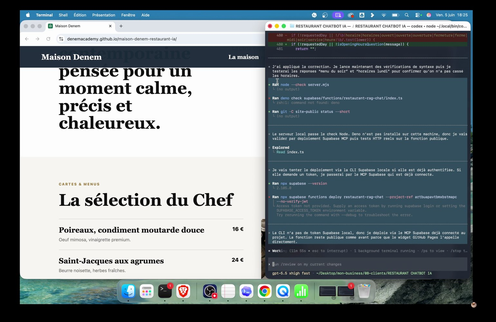
La V1 publique est testee apres publication.
73Acte 8 · Publier la V1Seance 23
Je garde le support de formation separe.
Le site client sert a Guillaume. Le support de formation sert a l'eleve. Les deux n'ont pas le meme public ni les memes fichiers.
A faire
Separe repo client, repo formation et fichiers de transcription.
Preuve
Chaque public voit uniquement ce dont il a besoin.
Attention
Melanger support, secrets, video et site client rend la publication dangereuse.
Prompt a copier
Ecris-moi un mail tres amical pour Guillaume.
Dis-lui :
- que la V1 de l'assistant IA restaurant est en ligne
- qu'il peut tester le lien
- que je veux son retour sur l'experience client
- qu'il peut tester la carte, les horaires, les options vegetariennes et la partie vocale
- que je ferai les ajustements ensuite
Ton :
- simple
- amical
- court
- pas corporate
74Acte 8 · Publier la V1Seance 23
Je prepare un email simple.
Le mail ne doit pas survendre. Je dis que la V1 est en ligne, que Guillaume peut tester carte, horaires, options vegetariennes et voix, puis je demande son retour.
A faire
Utilise le prompt email et relis a la main.
Preuve
Le client sait quoi tester.
Attention
Un email trop long dilue la demande de retour.
75Acte 8 · Publier la V1Seance 23
La V1 sert a apprendre.
Je n'attends pas une version finale parfaite. J'envoie une V1 pour obtenir des retours et construire une V2 qui colle vraiment aux attentes.
A faire
Presente la V1 comme testable, pas definitive.
Preuve
Le client sait qu'il peut orienter la suite.
Attention
Construire trop loin sans retour client fait perdre du temps.
76Acte 8 · Publier la V1Seance 23
Je demande des retours precis.
Les retours attendus portent sur l'experience client : est-ce fluide, naturel, utile, rassurant, assez proche de la maison ?
1
ActionDonne une grille de test au client.
2
ValidationLe feedback devient actionnable.
3
PiegeDemander 'tu en penses quoi ?' donne souvent un retour vague.
Controle
Le feedback devient actionnable.
77Acte 8 · Publier la V1Seance 23
Je garde le prix en tete.
Une V1 fonctionnelle peut deja devenir une mission facturable, selon le client, la profondeur et l'integration finale. Je pense en valeur, pas seulement en temps passe.
1
Preparer
Relie le prix a l'usage et aux risques traites.
2
Verifier
Tu peux expliquer pourquoi le projet vaut plus qu'une page web.
3
Corriger
Sous-vendre la partie RAG + voix est facile si tu ne montres pas le systeme.
78
La vraie competence, c'est la boucle : demander, tester, diagnostiquer, corriger.
78Acte 8 · Publier la V1Seance 23
La methode est une boucle.
Je pars d'un point A, je cherche, je demande, j'obtiens une reponse, je teste, puis je corrige. C'est exactement la competence a developper avec les agents IA.
A faire
Reviens au diagnostic apres chaque resultat.
Preuve
Chaque iteration ameliore une couche precise.
Attention
Attendre un resultat parfait du premier prompt bloque l'apprentissage.
79Acte 8 · Publier la V1Seance 23
La suite est l'exercice final.
Cette seance donne les pieces : RAG, chatbot, voix, design, publication. La prochaine etape consiste a tout refaire sur un projet choisi.
Avant
Regarder la seance sans refaire ne cree pas la competence.
Apres
Tu peux expliquer comment atteindre un objectif sans tout coder toi-meme.
Decision
Prepare ton propre cas client.
80
80Acte 8 · Publier la V1Debut de bloc
Fin de seance : je sais livrer une V1 IA.
Le livrable final est un lien testable, un widget texte et vocal, un RAG connecte, des tests metier et une demande de retour client.
Refais la checklist complete avant d'envoyer.
Tu as une page active, des prompts copiables et une methode reutilisable.
Ressources
Fichiers utiles
La transcription complete et les segments restent disponibles pour refaire la seance sans perdre les prises de parole.